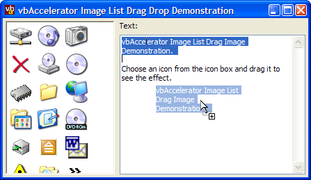

VB5 Image List Drag Sample (124K)
VB5 Image List Drag Sample (124K)
 VB6 Image List Drag Sample (122K)
VB6 Image List Drag Sample (122K)
 19 Feb 2003
19 Feb 2003
First Posted
 Get a Picture of the Desktop's Contents
Get a Picture of the Desktop's Contents
 Displaying Alpha (32bit) Icons with ImageLists
Displaying Alpha (32bit) Icons with ImageLists
 vbAccelerator ImageList Control and Class v2.0
vbAccelerator ImageList Control and Class v2.0

Custom Drag-Drop Images Using ImageLists
Add customisable Explorer-Style drag-drop images to VB applications
The standard VB drag-drop functionality provides a cursor to indicate that a drag-drop function is in progress. This article demonstrates how to add an image of the object being dragged to the drag-drop control, in the same way that Explorer does using the ImageList APIs.
About ImageList Drag and Drop
The ImageList control provides functions for dragging an image on the screen. The dragging functions move an image smoothly, in color, and without any flashing of the cursor. In addition, when you use the functions under Windows 2000 or XP the drag image is also rendered translucently and preserves any alpha shadows which greatly improves the visual appearance.
There are only 8 API declares for using ImageList drag and drop. In this sample they're wrapped up into a class which makes it simple to use.
Using the Sample Code
The main class of the sample is cImageListDrag. To use the class you perform the following steps:
- Create an instance of the class
Private m_cDrag As New cImageListDrag
- Tell the class which ImageList to use
You can use any ImageList which exposes a ComCtl32.DLL compatible ImageList handle to do this. Note that excludes the MSCOMCTL.OCX (MS Common Controls 6) ImageList which doesn't work correctly with ComCtl32.DLL under 2000 or XP.m_cDrag.hImageList = ilsIcons.hIml
- Set the Owner Window for the drag image (optional)
If you only want the drag image to appear within a particular object then you can specify the object using the Owner property. Note that any of the children of the specified object are included.m_cDrag.Owner = Me ' Only show Image on current Form
- Respond to the OLEStartDrag event
During the object's OLEStartDrag event you tell the class which image from the ImageList to draw and specify the offset of the cursor from the image's top-left corner in pixels:Private Sub Form1_OLEStartDrag( _ Data As DataObject, AllowedEffects As Long) ' Show the first image in the image list at a position ' 8 pixels below the cursor diagonally: m_cDrag.StartDrag 0, -8, -8 End Sub - Respond to the OLEGiveFeedback event
The OLEGiveFeedback event allows you to update the position of the drag image as the cursor is moved (although see the Limitations below for more details):Private Sub Form1_OLEGiveFeedback( _ Effect As Long, DefaultCursors As Boolean) m_cDrag.DragDrop End Sub
- Clear the Drag Image when dragging is completed
Call the CompleteDrag method in response to both the OLEDragDrop and OLECompleteDrag events:Private Sub picDragDrop_OLECompleteDrag(Effect As Long) ' m_cDrag.CompleteDrag ' End Sub Private Sub picDragDrop_OLEDragDrop( _ Data As DataObject, Effect As Long, _ Button As Integer, Shift As Integer, _ X As Single, Y As Single) ' m_cDrag.CompleteDrag ' .. other drop processing here: End Sub
That's pretty much it for creating a standard drag image. If you want to update the contents of the window you're dragging over, then you should call HideDragImage True prior to drawing and HideDragImage False once complete. This ensures you don't overdraw the drag cursor.
Creating Custom Drag Images
The quick demonstration above demonstrates how to use an existing icon in an ImageList as a drag image, however, provided you can create any image you want to for dragging provided you can create the Image in a form you can add to an ImageList. The demonstration project shows how to use a Memory DC object to draw selected text from a TextBox and drag that. Note you could also capture an area of the screen directly and use that for your drag image.
Limitations
You might want to read through this section to get an idea of some of the issues and limitations that arise and their workarounds.
Painting Issues
The SDK notes that when drawing the drag image you can get issues with updates or screen painting unless you use the ImageList_DragLeave function to hide the drag image whilst the painting occurs (which is what the HideDragImage method in the class does). Unfortunately, if you don't own the control that's being painted doing this isn't really an option. There are three things you can do to help avoid this being a problem.
- Draw the Drag Image Underneath the Cursor
If you draw the drag image below the cursor, then its unlikely that any painting in the control will occur in the area of the drag image. To do this, use negative values for the xOffset and yOffset parameters of the StartDrag message. - Use RedrawWindow to clear any left over effects when dropping
After a drop its likely the control's display will be affected. For example, dropping text on a text box causes the new text to be inserted, and some of that may occur under the drag image. You can fix any artifacts by calling RedrawWindow as soon as you've ended the drag:Private Type RECT left As Long top As Long right As Long bottom As Long End Type Private Declare Function RedrawWindow Lib "user32" ( _ ByVal hwnd As Long, lprcUpdate As RECT, _ ByVal hrgnUpdate As Long, ByVal fuRedraw As Long) As Long Private Declare Function GetWindowRect Lib "user32" ( _ ByVal hwnd As Long, lpRect As RECT) As Long Private Declare Function OffsetRect Lib "user32" ( _ lpRect As RECT, ByVal x As Long, ByVal y As Long) As Long Private Const RDW_UPDATENOW = &H100 Private Const RDW_INVALIDATE = &H1 Private Const RDW_ALLCHILDREN = &H80 Private Const RDW_ERASE = &H4 .. ' Assuming the hWnd variable contains your Window's hWnd: GetWindowRect hWnd, tR OffsetRect tR, -tR.Left, -tR.Top RedrawWindow hWnd, tR, 0&, _ RDW_UPDATENOW Or RDW_INVALIDATE Or _ RDW_ALLCHILDREN Or RDW_ERASE
VB and OLE Drag Drop
In order to display the drag drop image, you need to get some sort of event as the mouse moves. If the object that the mouse is over has the OLEDropMode set to Manual (1) or Automatic (2) then VB's OLEGiveFeedback event is fired whenever the mouse moves. However, if the object doesn't has OLEDropMode set to None (0) then you won't get any event. This means that the drag image disappears as you move the mouse over that object. There are two ways of working around this:
- Set all objects on the form to Manual or Automatic OLEDropMode at design-time or run-time. This ensures the drag image is always displayed, but note that unless you code the OLEDragOver method for every object to return a vbDropEffectNone drop effect, the user won't get a visual cue that they can't drop on that object. This is tedious.
- Use a Windows Mouse Hook to capture all mouse events during the duration of the drag. This solves the issue completely but can adds complexity to debugging the project.
Alpha Icons
Note that the demonstration project uses 32bit icons with alpha channels. Note that these only render correctly under Windows XP or above, otherwise you'll see a dark shadow around the icons. However, everything else will work ok under any other OS.